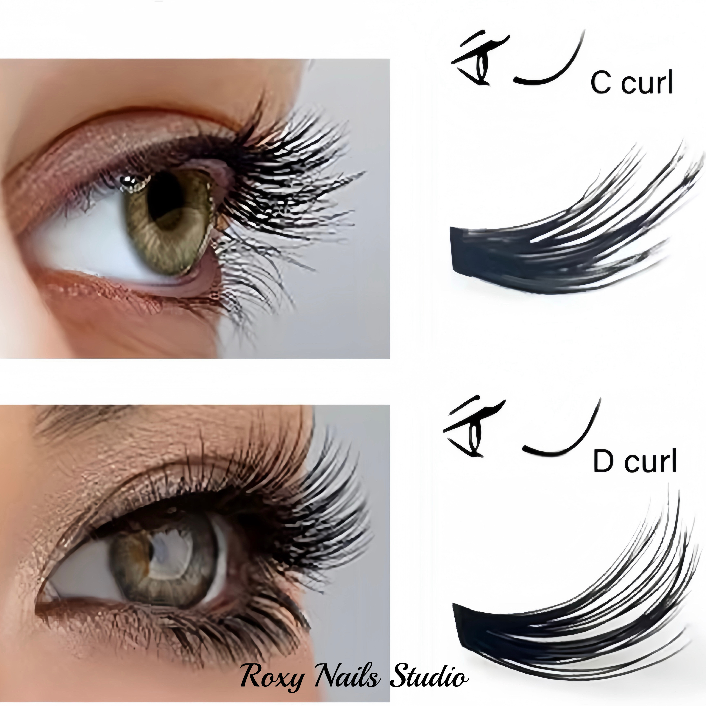
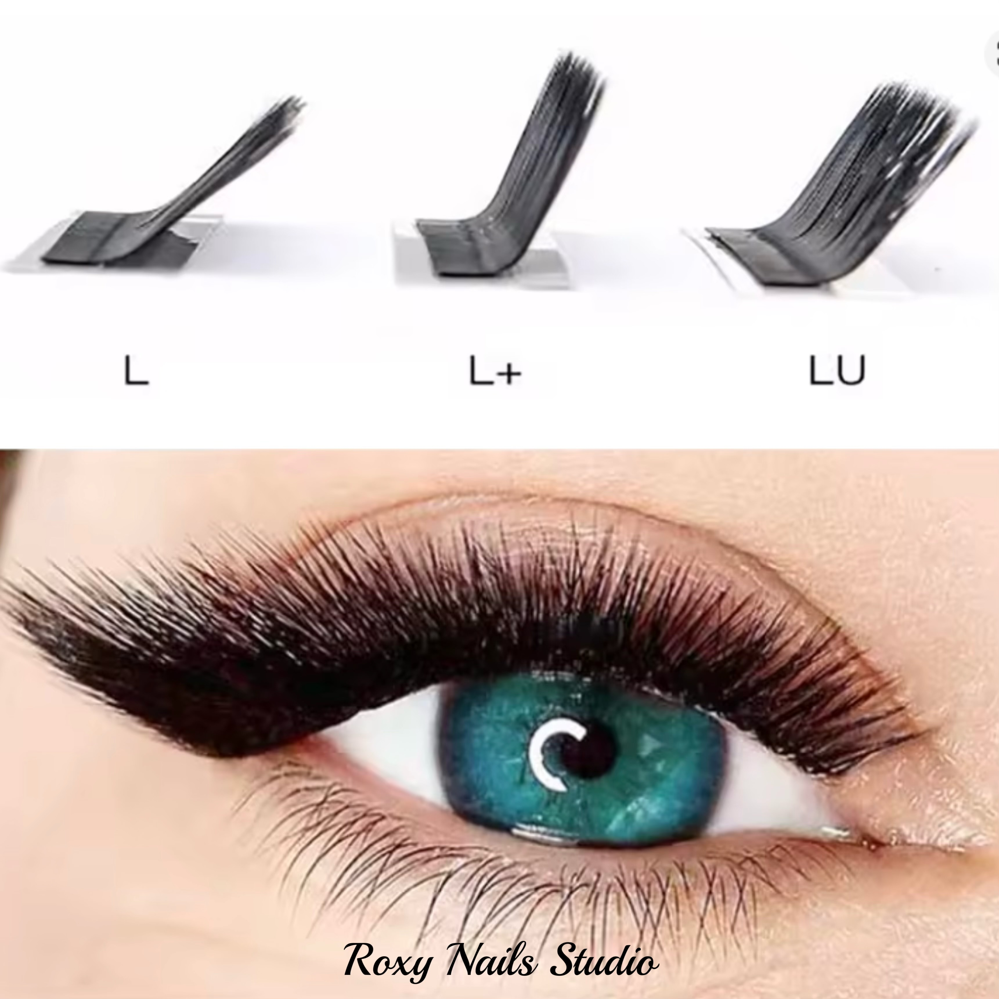

Eyelash Lift Types - Which One Is Right For You?
Type C - Natural Beauty
- Appearance: Gentle semicircle (like the letter C).
- Effect: Opens up eyes while looking subtle.
- For whom: For those who want just slight enhancement. Suitable for almost everyone.
Type D - More Dramatic Eye Opening
- Appearance: More curled into an "S-shape" (like D).
- Effect: Eyes appear larger and lashes longer than with "C".
- For whom: When you want visible difference but not too noticeable.

Type L - Subtle Lengthening
- Appearance: Straight with slightly curved tip (like L).
- Effect: Natural lash lengthening.
- For whom: For very discreet lift, or short lashes.
Type M (L+) - For More "Wow" Effect
- Appearance: Combination of "L" and "C" - lash waves more.
- Effect: Lashes look fuller and eyes more radiant.
- For whom: When you want people to notice your lashes.
Typ LU - Maximální drama
- Appearance: Strong double curve (like S).
- Effect: Looks like false lashes - very dramatic!
- For whom: For those who love extravagant looks.

Typ C - Přirozená krása
- Jak vypadá? Jemný půlkruh (jako písmeno C).
- Efekt: Otevře oči, ale vypadá nenápadně.
- Pro koho: Pro ty, co chtí jen lehké zvýraznění. Hodí se skoro na všechny.
Typ D - Výraznější otevření očí
- Jak vypadá? Víc zakroucené do "esíčka" (jako D).
- Efekt: Oči vypadají větší a řasy delší než u "C".
- Pro koho: Když chcete viditelný rozdíl, ale ne moc nápadný.
Typ L - Jemné prodloužení
- Jak vypadá? Rovné s lehce zahnutou špiškou (jako L).
- Efekt: Přirozené prodloužení řas.
- Pro koho: Pro velmi decentní lifting, nebo krátké řasy.
Typ M - Pro více "wow" efekt
- Jak vypadá? Kombinace "L" a "C" - řasa se víc vlní.
- Efekt: Řasy vypadají hustší a oči zářivější.
- Pro koho: Když chcete, aby si lidé všimli Vašich řas.
Typ LU - Maximální drama
- Jak vypadá? Silné dvojité zakřivení (jako S).
- Efekt: Efekt jako nalepené řasy - velmi výrazný!
- Pro koho: Pro ty, co milují extravagantní vzhled.